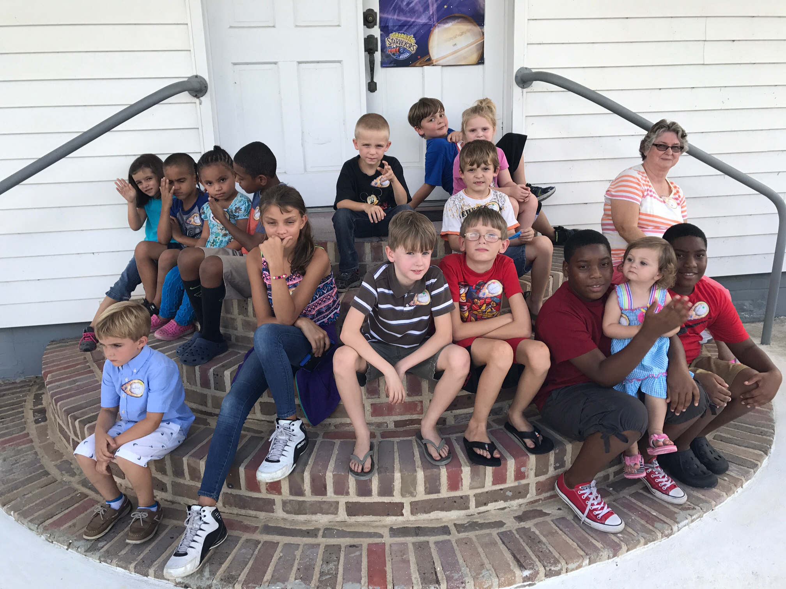
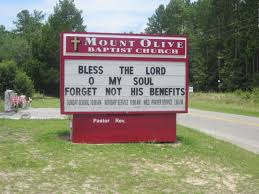
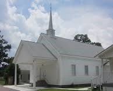
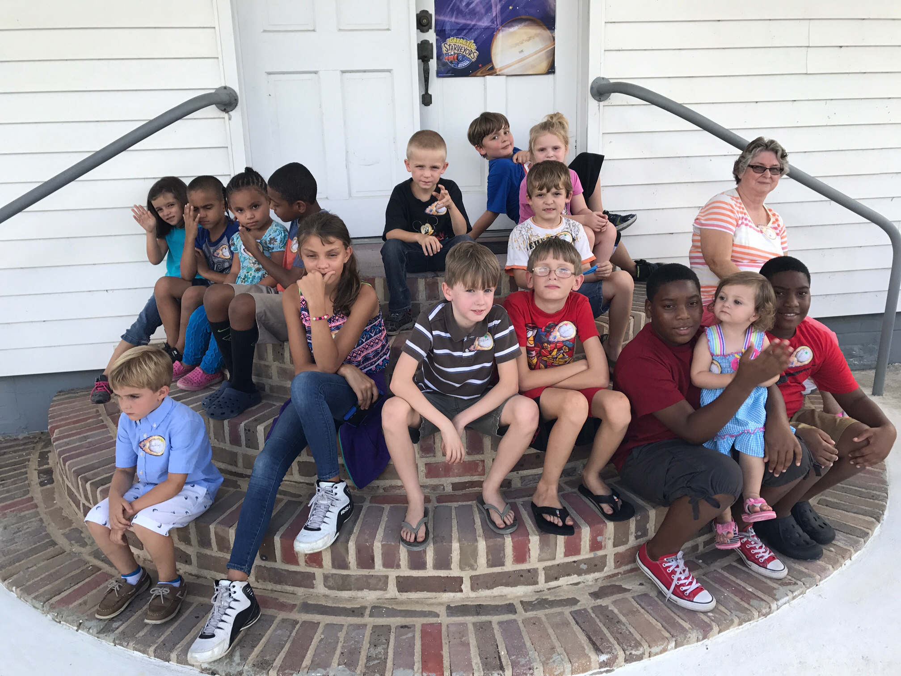
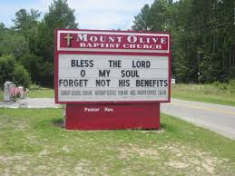
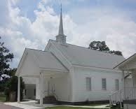

Mount Olive Baptist Church
At Mount Olive we are just like family
Thank you so much for visiting our site. At Mount Olive we understand the importance of loving God and loving others. It is one thing to say we are like family, but here we put these words into practice. While it may sound cliche to some, we understand one very important truth and we allow that to be one of our guiding principles. "People will not care how much we know until they know how much we care". Mount Olive feels like home because there is a strong sense of community among believers. Please come check us out this Sunday and see firsthand that we are a church who truly loves God and cares for others.
To the right, you will find service times, upcoming events and the sermon of the week. To the left, you will find the menu that will lead to the rest of our site. Our hope is that once you have explored our site, you will want to come see us in person. Below is a brief description of what is contained in each section.
Our Mission - Visit this page to find out what we are trying to accomplish
Our History - Visit this page to find out where we have been, where we are now, and where we are going
Our Beliefs - Visit this page to discover the core beliefs that bond us together
Media Gallery - The old saying is true, a picture is worth 1,000 words
The Bible - Find out what is so important about this book
Contact Us - We are here for you and want to hear from you